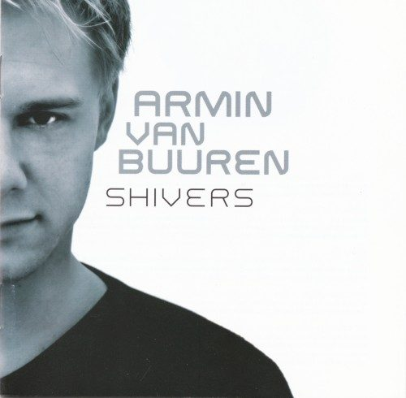

Armin Van Buuren - Shivers


(Central Station/MRA)
There is no one beyond Armin Van Buuren who has done more for trance in the last 18 months. Rising towards the top of the global DJ circuit, he single-handedly restored credibility to a genre that, despite the good work still being produced, had been tossed into the ‘vapid euro trash’ basket. Still flying the flag of euphoric, emotional trance, Armin gave it a breath of fresh air with lashings of progressive and tech, paving the way for the success of cutting edge producers like Above & Beyond and Gabriel & Dresden. While Armin has had his fair share of club hits over the years, his new album Shivers sees him roaming into undiscovered territory.
The album opens with a glitchy wave of crunchy-tech soundscapes, met with seething breakbeats, a pulsing bassline and passionate female vocals. The goods are also delivered on the follow up Empty State, a prime example of progressive trance that manages to suck the listener in emotionally yet keep them at a distance with its menacing undertones. It promises an exhilarating blend of progressive, breaks and trance with a polished edge of beautiful ambient sound, along the lines of Hybrid and Way Out West. Unfortunately, these are lofty ambitions that are never properly reached.
Armin delivers his best results when sticking close to the sound that has made his name. Hence, the title track Shivers sees him smashing it out of the ballpark. Featuring a long, deep buildup that pulses hypnotically before peaking into a vocal-laden chorus, it’s classic to the extreme but no less exhilarating for it. It bridges the gap between progressive and trance in the best possible way; if only that could be said for the rest of the album.
Shivers sees Armin pursuing the densely layered progressive/tech-trance sound increasingly heard in his DJ sets. Trying to break the mould he made for himself, he never completely succeeds in locking it down. He’s shooting for something higher, more involved and emotional, but he falls short with results that often tend to sound a little half-baked. The tech and progressive elements just aren’t as punchy or effective as the material in Armin’s own record box, and it’s hard to escape the feeling that he has delivered an imitation. An accomplished imitation maybe, but an imitation nonetheless.
This is not to say that Armin doesn’t get it right at least a few times on Shivers. The partnership with Gabriel & Dresden, Zocalo, is a great example, as are the cold synthetic rhythms of Bounce Back and the effortless euphoria of Gypsy. That said, a track like Golddigger shows what the album lacks. Featuring production that borders on wishy-washy, the vocals from Martijn Hagen bring the sort of angst heard in a flaccid Limp Bizkit ballad – not the sort of vibe you’re really looking for in a soaring progressive trance tune. This overall feel means that none of it gels as an album.
It’s a painful thing to criticise Armin Van Buuren, if only because he is a first-rate DJ who has taken the trance in fantastic new directions, and tried to consolidate it with his new album. While he nails it with Shivers, it’s a crying shame he wasn’t able to turn his assured producer’s hand to the other musical styles he explores here. At times the album is still slick, clever and accomplished – it just lacks that certain oomph that pushes it over the line into A-grade material. As it stands, Shivers is good but not great, and from Armin we expect a little bit more. Close, but no cigar.